Uchinada, Ishikawa: things to do, food and stays
Uchinada · Ishikawa
Uchinada
Highlighted on the Ishikawa map.
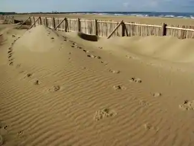
Stay
ホテルリブマックスBUDGET金沢医大前
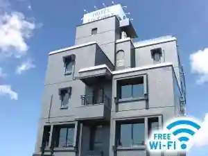
Hotel Ribumakkusu BUDGET Kanazawa Idai Mae
内灘町サイクリングターミナル
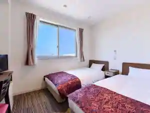
Uchinada Machi Saikuringutaminaru
Dining
らーめん la.la.la.
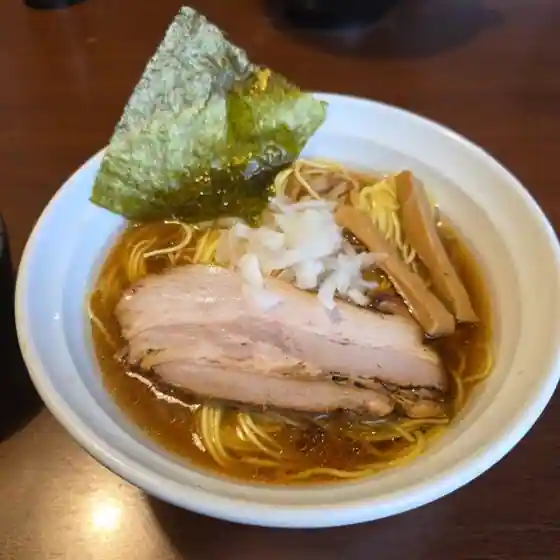
Ramen la. la. la.
ミンライ
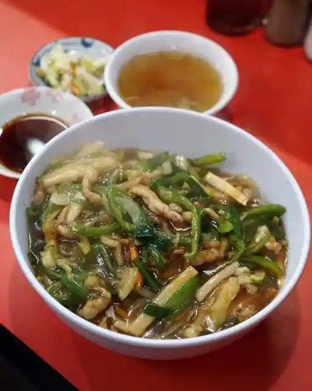
Minrai
夢ミルク館
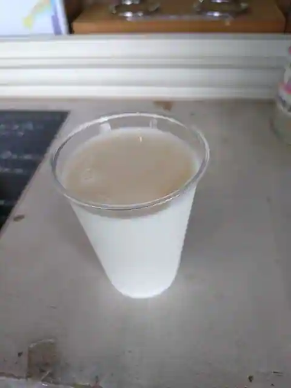
Yume Miruku Kan
八百屋のスイーツ Horita 205 内灘店
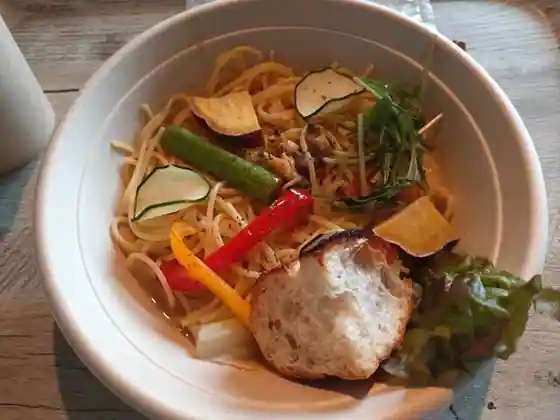
Yaoya No Sweets Horita 205 Uchinada
ボングー
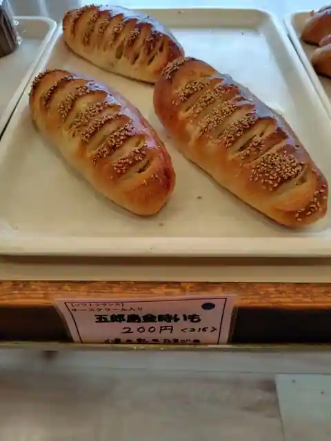
Bongu
はづ貴
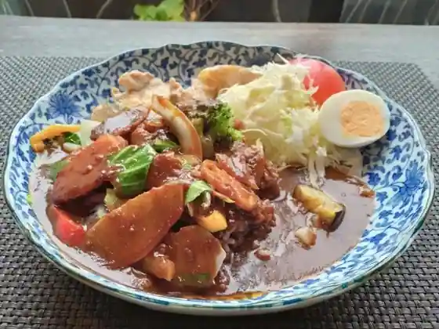
Hazu Takashi
内灘サンセットパーク
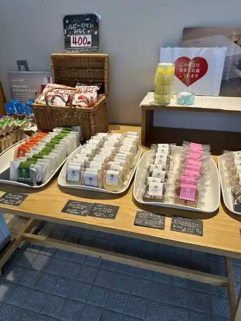
Uchinada Sansetto Park
ブリーズ・ドゥ・メール
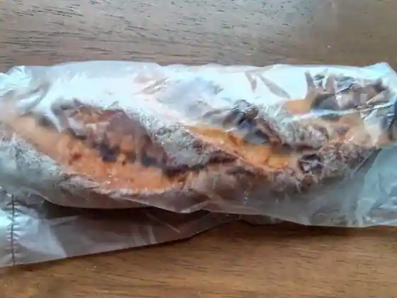
Burizu Dou Meru
九州台所八兵衛
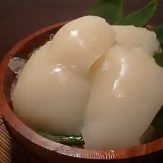
Kyushu Daidokoro Hachibe
Horita PICNIC
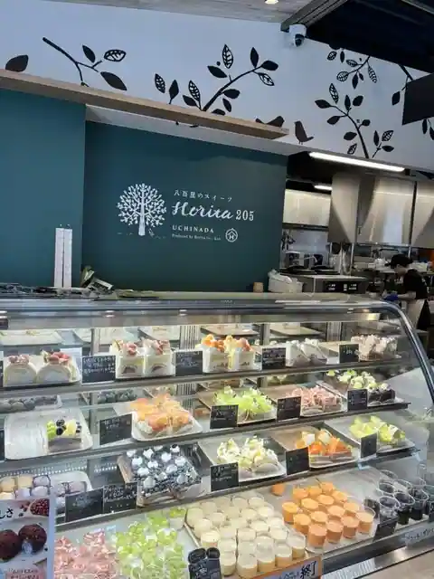
Horita PICNIC
和乃食はねや
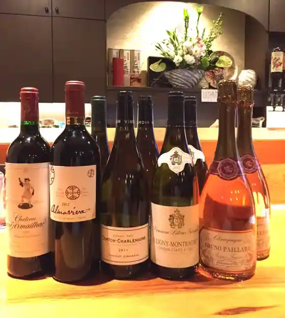
Wa No Kuha Neya
鎌路
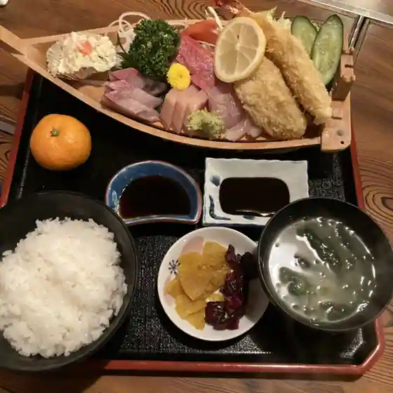
Kama Michi
iWAFFLE cafe
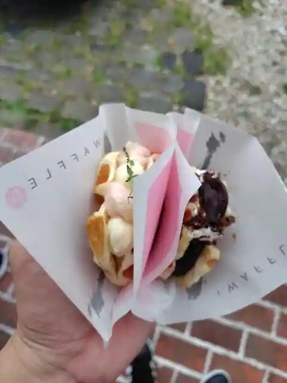
iWAFFLE cafe
ボン・ジュルネ
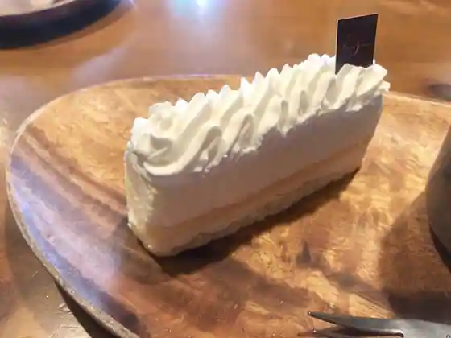
Bon Jurune
ポコ ア ポコ
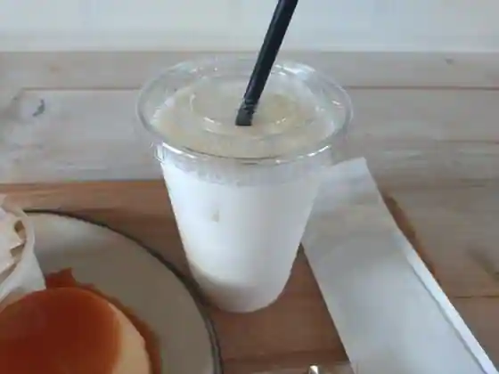
Poko A Poko
ラーメン藤
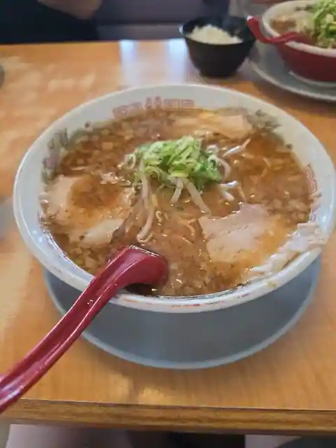
Ramen Fuji
愉楽庵
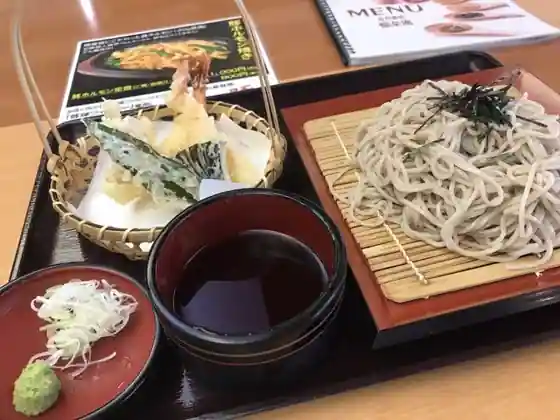
Yuraku Iori
笑わ
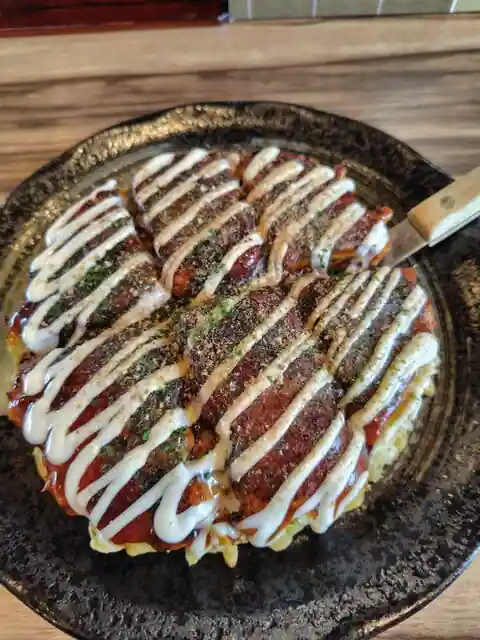
Warawa
でんさく食堂
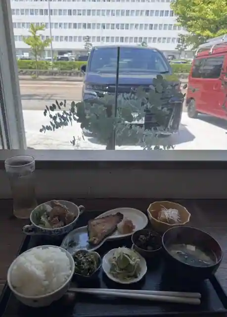
Densaku Shokudo
永
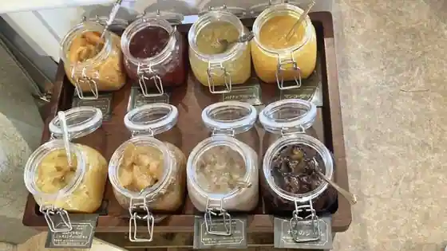
Ei
焼肉酒場力 内灘店
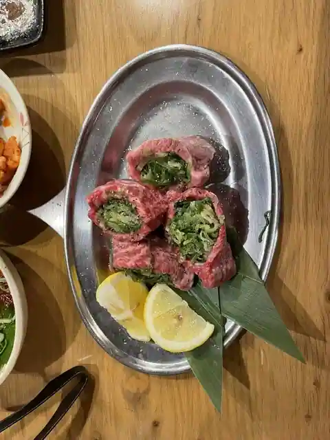
Yakiniku Sakaba Chikara Uchinada
カマトコンロ
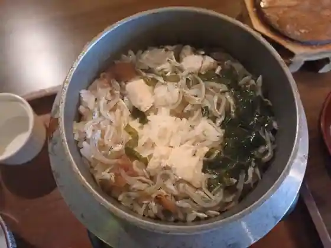
Kamatokonro
居酒屋ひばり
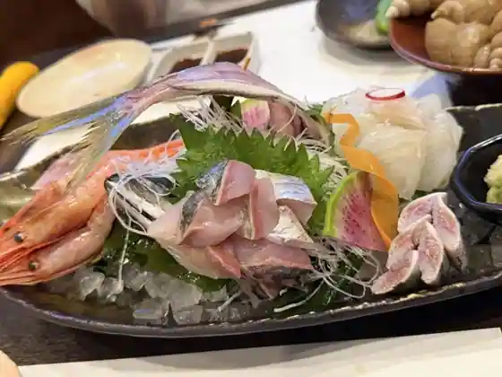
Izakaya Hibari
Maison de Ako
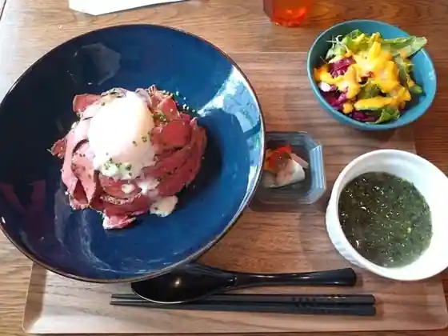
Maison de Ako
Sights
Uchinada Sakyu
Uchinada General Park
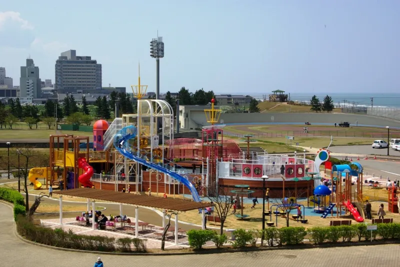
Uchinada Beach
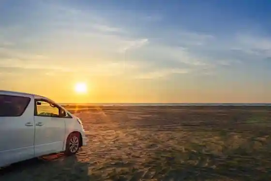
Kahoku Kata Hori Ranch / Yume Miruku Kan
Roadside Station Uchinada Sansetto Park
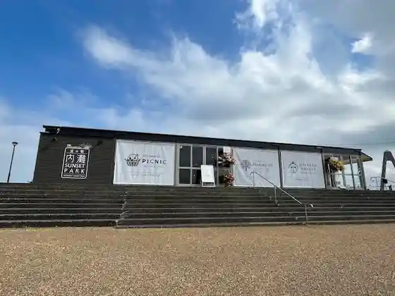
Uchinada Bridge / Sansettoburijji Uchinada
Uchinada Saikuringutaminaru
Gongen Mori Beach
Chakudan Chi Kansokujo Ato (Gongen Mori)
Koibito no Seichi Obujie & Shiawase He no Kane
Beigun Shisha Ba Shageki Shiki Tokoro Ato
Chakudan Chi Kansokujo Ato (Nishi Abaraya)
Uchinada Folk History Museum (Kaze to Suna no Kan)
Roadside Station Uchinada Minikuru /UCHINADA CRUISING
Obama Shrine
Uchinada Sogo Guraundo
Zeniya Gohe Kuhi
Inoe Yasufumi Gaku Hi
Hirasawa Yoshitaro no Hi
Obama Jinja Sha Shi
Takahama Kyoshi Kuhi (Uchinada)
Uchinada Town Hall